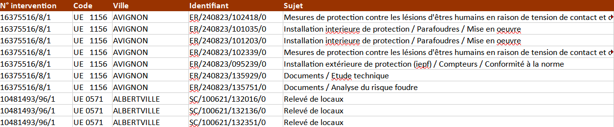
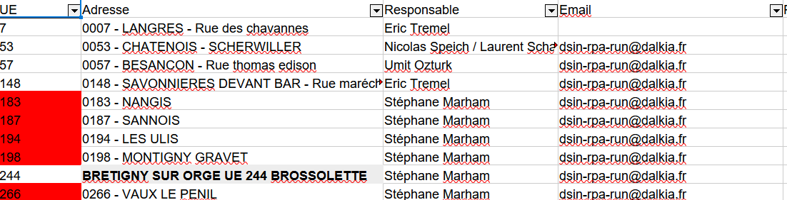
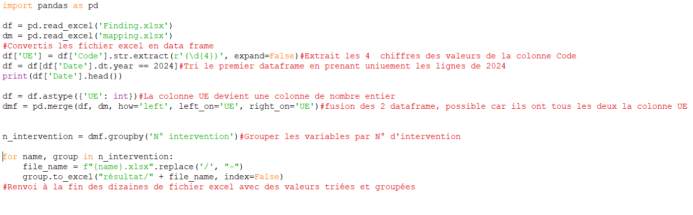
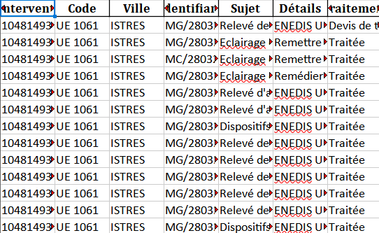

Avec la librairie Pandas, j'ai pu convertir des fichier excel en tableau de données(dataframe), et travailler dessus avec du code Python.
Voici un extrait des 2 fichier excel sur lequel j'ai travaillé:


Puis un script qui m'a permis de les trier et d'avoir en résultat plusieurs dizaines de fichiers excel avec des valeurs plus pertinentes.

Voici à quoi ressemble un fichier après le script python:
